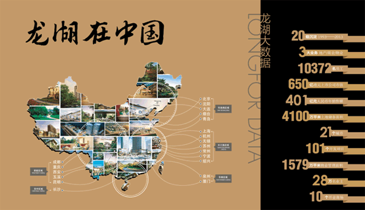
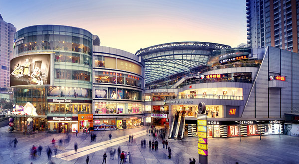
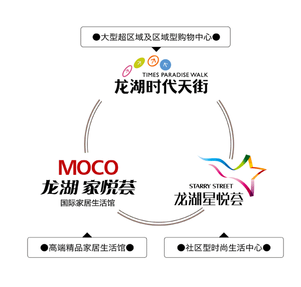

21载21城 龙湖“善待你一生”
21年前，龙湖发迹于中国重庆，
21年后，龙湖已成为让世界为之倾慕的房地产企业，所到之处皆为之风靡。
21年来，龙湖完美诠释了“善待你一生”理念，为30万“龙民”营造出了专属的“龙湖式幸福”。
截至2014年2月，龙湖已将版图扩大至全国21座重要城市，
拥有超过1万名员工，市值达650亿港元，
地产开发方面，龙湖已累计开发101个项目，
合计约1500万平方米的建筑面积。而土地储备更达到4100万平方米。

龙湖地产 中国地产TOP10
•中国房地产百强企业综合实力TOP10
•中国房地产上市公司综合实力10强
•中国房地产上市公司盈利能力10强
•香港上市房企（港股代码：00960）
•2012、2013年入选”福布斯亚太区最佳上市公司50强”
•中国别墅专家
•中国园林大师
•中国最赚钱的商业地产之一
•中国第一钻石物业
龙湖商业 中国商业地产先行者
10年商业修为 革新中国传统商业版图
龙湖在商业地产领域已摸爬滚打10载之久。在居住领域，龙湖地产一直践行对于生活的善待哲学，在商业领域，龙湖则已打造出“天街”、“星悦荟”、“家悦荟”三大商业地产战略品牌，并在多地进行复制建设。
在龙湖商业版图中，除目前已运营的10余个项目之外，未来3年每年都有至少1个区域型购物中心开业。

龙湖商业 三大商业地产战略品牌
龙湖天街——大型超区域及区域型购物中心
集购物、饮食、休闲、娱乐等，多种消费类型于一体的一站式商业综合体，成为城市或区域，的地标性商业。
龙湖星悦荟——社区型时尚生活中心
面向中产阶级家庭的综合消费，旨在打造更具品质、更加愉悦的生活方式。
龙湖家悦荟——高端精品家居生活馆
家居主题型售场，面向中产阶级以上客群，引领品位与潮流，彰显客户的身份价值。
